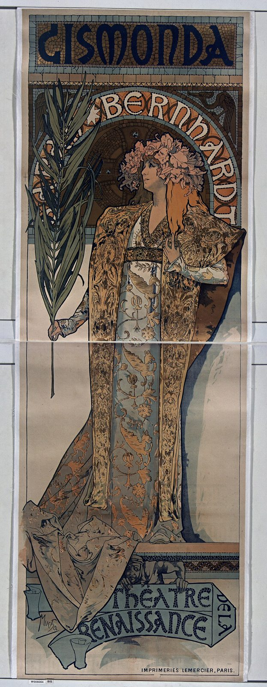

References / Poster / 195
Gismonda poster by Alphonse Mucha
The life-size poster that made Mucha’s name: Sarah Bernhardt as a Byzantine noblewoman under a mosaic arch, in pastel ochres, rose, and slate blue, with flared hand-drawn capitals.
- Source
- Bibliothèque nationale de France, Gallica: Gismonda. Sarah Bernhardt. Théâtre de la Renaissance (épreuve du tirage définitif)
- Creator
- Alphonse Mucha; printed by Imprimeries Lemercier, Paris
- Made
- Designed December 1894 for posting from 1 January 1895 (Wikipedia); BnF and Commons date this proof 1895
- Style
- Art Nouveau (agent-proposed, not yet reviewed by a person)
- Moods
- Theatrical, romantic, ornate
- Evidence
- Downloaded and inspected a 960 × 2466 px copy of the BnF scan on Wikimedia Commons_(%C3%89preuve_du_tirage_d%C3%A9finitif)_-_Mucha_-_btv1b90163096.jpg). The copy is the BnF proof of the final printing, shelf mark ENT DN-1 (MUCHA,Alphonse/3)-ROUL, printed in two sheets. Also compared the reduced Maîtres de l’Affiche plate 27 on Commons.
- Reviewed
- Rights
- Open license, stored. License: public domain. Rights policy

Context
Wikipedia: Sardou’s Gismonda opened on 31 October 1894 at the Théâtre de la Renaissance. On 26 December Bernhardt ordered a new poster from the printer Lemercier to be ready by 1 January 1895; Mucha, who happened to be there correcting proofs, received the commission. The poster is a little more than two metres high. Wikipedia: Alphonse Mucha.
Wikipedia notes the arch behind the head, “almost like a halo”, which appears in all of Mucha’s later theatre posters, the Byzantine mosaic behind the head, and the delicate pastel colours, unlike the bright posters of the time. Its success led to a contract for six more Bernhardt posters. Wikipedia: Alphonse Mucha; Wikipedia: Art Nouveau.
The Commons record of the BnF copy gives the size as 217 × 75 cm and the catalogue reference Rennert and Weill 3. BnF catalogue.
Observed
- The format is very tall and narrow, about 1 : 2.9.
- At the top, “GISMONDA” in dark blue capitals on an ochre mosaic band. The letters are hand-drawn, with flared strokes and an unusual G and A.
- Behind the head, a round arch carries “BERNHARDT” in cream letters on an orange band, with a mosaic dome inside it. It acts as a halo.
- Bernhardt stands in profile with a crown of pink orchids and long orange-red hair. She holds a tall palm branch in sage green.
- Her robe and stole are covered in dense gold, ochre, and slate-blue brocade with birds and flowers; the lower half of the poster is mostly this fabric on a plain cream ground.
- At the bottom, a curling banner reads “THÉÂTRE DE LA RENAISSANCE” in dark blue capitals. “IMPRIMERIES LEMERCIER, PARIS” is set small at lower right. A thin dark border frames the whole sheet.
- Colours are muted: ochre, old gold, dusty rose, sage, slate blue, and cream, with dark blue-black outlines.
Why it belongs
The poster sets most of the style’s graphic rules: the arched medallion behind the head, the flower crown, the flared, legible hand lettering, the dark key line, and a pastel, earthy palette on a light ground.
Its whiplash is soft: curves appear in the hair, the palm, and the banner, while the frame stays a tall rectangle.
Borrow
Put a round arch or halo behind the key figure or heading, and set a word along the arch.
Set a title in a band at the top and a short credit on a curling banner at the bottom, leaving the middle to the image.
Use a tall, narrow panel for a hero image.
Measured
Machine-extracted by tools/image-traits.py on . Full measurement.
- Mean chroma
- 0.08
- Palette
- #a99a8a 13%
- #c6c7c7 13%
- #5d554b 7%
- #6c6053 4%
- #3a2e27 4%
- #816c58 4%
- #6e523e 4%
- #464949 4%

